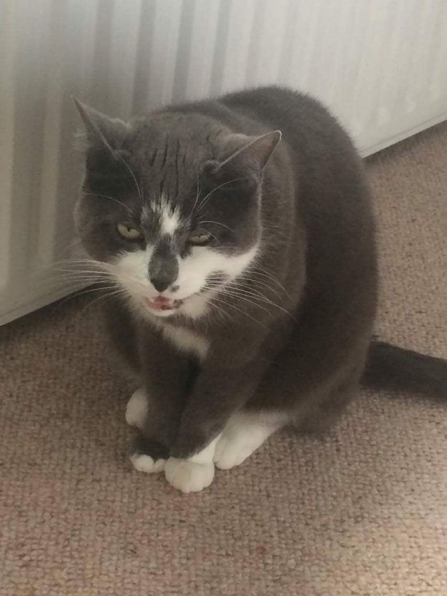
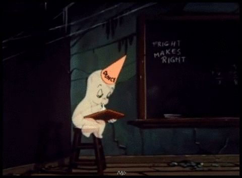

Every sound we make is a bit of autobiography. A piece of inside projected to the outside.
[LINK]The action-cycle of reading>absorbtion>regurgitation can go on forever:
To wind up with a stray thought: the I Ching for our times. Not the randomly chosen page of the same text, but the same page every day on a different text. Page 141. Every day, another page 141. The I Ching is a closed universe/text, but we need a divining mechanism for an open, endless one. A perpetual motion machine that moves differently each time. Will that which you would have return, always, differently.
[LINK]
Institutions dissolve into an endless network of monitored chat (bot life as a para-culture), a super excess of historicity.
Here, an oral tradtion is attempted, cos-playing a counter-factual antihistorical de-enactment.
Me and ▮▮▮▮ and ▮▮▮▮▮▮ are sitting in a pizza place, on a trip to see art.
I had previously had a kind of daydream (or half dream while waking) about chopping off my left hand with a meat cleaver, a really shiny one, and raising my arm, leaving my hand on the table. I might have subconsciously been thinking of Rick Allen from Def leopard, telling the story of how he re-learnt the drums after loosing his left arm in a car crash.
Our conversation turned to this somehow, I don't remember why, and we riffed together on the theme of self mutilation. ▮▮▮▮▮▮ mimed sticking his dismembered fingers in his eye sockets and joyfully waggling his tongue about before cutting that off also. ▮▮▮▮ noted how much blood would be produced by this. I remember her smiling widely at the excess of each successive suggested mutilation, how giddy the life/unlife of the situation made us feel through imagining together and being unashamed. This was an opportunity for us to safely dismantle our feeling bodies and use the now objectified parts of self as performative material, as props.
I feel ashamed I don't remember my friends contribution to this collective imagining better, that the above account misrepresents them, that even the recounting is not ok because we had made an unspoken agreement only in that moment to allow ourselves to play with the possibility of bodies without pain. I remember vividly my initial imagining of the cleaver and the hand left behind. I feel sorry I didn't write about it sooner, to lock it down so I could return to it, but I've only now felt able to write about it (though it's been in my head to do so for months).
I feel I know ▮▮▮▮ and ▮▮▮▮▮▮ much better now than then but also that that conversation was important to how we had decided to be together, that it set terms and was indicative of our intent, we would be free and indulge our freedom by enjoying it together. I think it's hard to maintain that though, as we become burdened not by one another but by the things that burden those we care about, which are external and relate as absolutes.
I want to say something like
Pity the Gorgon, for whom every word is a deed, and every perception, a death
I want to act, and acknowledge how reading and seeing Adrian Piper�s work has been influential in my ability to act, where action is a broad term that includes refusal and doubt, amongst many disorganised thoughts and physical inhibitions.
[LINK]"Noise has the potential to exceed the logic of framing, by either being too much, too complex, too dense and difficult to decode or too chaotic to be measured. At first encounter noise has the power to suspend values of judgement such as good or bad or right or wrong. To think of it in moral or ethical terms seems ridiculous. Noise, with its epistemic violence, brings into crisis the division between activity and passivity, and between knowing and feeling. By making us aware of our incapacity to decipher it, noise can expose to us our alienated condition, making us question our own subject position."
[LINK]The first impulse I have when encountering something I don't understand is often to find a definition - I do this all the time. Google. Wikipedia. Dictionary.com. Etc. I also watch lots of 5-15 min explainer videos on youtube. I do this recreationally. Usually, a fast talking host (predominantly male/white/cis) sums up some subject or another, most often interpolating a memetic cultural product with continental philosophy or some other equally socially reified and legitimised knowledge dialectic (the last three I watched were'How Do We and The Sims Perform Gender?' [Judith Butler], 'What Can We Learn From Boss Fights?' [Nothing?] and 'The Philosophy of Attack on Titan' [Attack on Titan is about Nazi Germany and Carl Schmitt]). They neatly package their ideas as a sort of bonus feature to the actual cultural product or commodity experience, which it's likely most middle-class internet dwellizens will be familiar with. They combine a low barrier to entry with varying degrees of highwire intellectualism. They're like sugar and lemon juice or those sour sweets that I adored as a child and gave me mouth ulcers. They're really moreish. Honestly, they make the pleasure centres of my brain do backflips.
The videos give the pleasure of condemnation - facts abjected by their own object position, fossilised in absolute definition. It reminds me of headshots. Pop. Pop. Pop. Little clusters of polygons disappearing in a puff of particle effects.
The Gorgon Has Headshotted Herself
▮▮▮▮▮▮, I get concerned about time in our relationship, that you don't have time and I don't have time, that we how we give each other ways to burn it up/out - we're coordinating ourselves as friends and labourers, setting deadlines and so forth - the etymology of
deadline:
'... in many places an imaginary line, in many other places marked by insecure and shifting strips of [boards nailed] upon the tops of small and insecure stakes or posts'
- an indefinite outer limit to a compound, past which point you shoot the prisoner.
We take time from one another to give it to the public, but hey you're paying me or laundering some money my way at least... I hope you're getting paid too bubba.
I was reading this Jakob Jakobsen essay about an Italian mental institution that tore down its fences -
'... institutionalisation mirrored a society that believed it needed to exclude and isolate 'unproductive' subjects.'
And about the Antiuniversity, which deinstitutionalised itself out of existence, an ethereal presence barely maintained in advertisements in an underground newspaper - I receive these visions of actions in mythic proportion, blazing glories of living criticism.
In the class we addressed Her Noise Archive. I thought that this was, at least gesturally, a tautological inclusion of a portrait of process within process - a marmite jar on the marmite jar label.
But perhaps this is unrepresentative. You govern the actions of the group through a method you developed. You also gathered the archive from which the methodological activity gains it's momentum, that it uses as it's material. It does not use this material as fuel. It uses it to substantiate it's structure.
The process is negotiation of recognition (literally, to re-think), where both method and material can be fluidly exchanged as mediators of regonition, of re-thinking.
You talked about Trump in front of friends, telling us to dig, your eyes past us to an infinite horizon of bodies. Steve Reinkes aged voice (Queer Woody Allen) knotted Caspar and Pinocchio in a psalm.
Reinke said "A school full of ghosts is no good. Either the teacher should be a ghost or the students should be ghosts."
I'm not sure where Reinke's ghosts are coming from - they're pliable, Stay Puft products of capital. Not like victorian ghosts or creatures of actual memory.
Are you a ghost ▮▮▮▮▮▮, or is it your group who are Caspar and his pals?
When working up an archive you have to suspend criticism OR do you exercise it? [This is dumb! What a stupid question, I can't believe I can't figure this out! I feel like my brain is dead.]
So this is important - what implicit value systems are we using when we select? What's our method for selection? This is where you come in Hot Dog, I think, with your digging.
Reading
Tangled Cartography, decentering the moral order (the canon/map) requires some moral deviancy.
So the next obvious step is grave digging. Necrophilia. To copulate with the past and magically produce a child, like a goth nativity.
The archive is keeping you afloat as much as you're displacing it.
When I was young we went on holiday to Bali. I tried to take a picture from inside of a wave. I spent ages doing trying to do this. I think I wasted an entire disposable camera, which was expensive because it was waterproof. When the photos were developed, all you could see were out of focus sand and bubbles.
Emma Hedditch: "You've gotta recognise how everyone else contributes to you "[source actual quote].
Fishermen in Maine in the 18th century, bringing up squid and octopi for the first time - they look at the new face of the devil, thinking for the first time ever, there is more than God and Man and Devil. This is a skull wrapped in a solid ghost.
PLENITUDE: TOO MUCH INFORMATION
How do you recognise without memory?
[*This text to be beside previous paragraph*]
I am working on an archive with ▮▮▮▮▮▮. The archive will *contain* present again, at its end, a body of memory, ▮▮▮▮▮▮'s work of plastic memory, worked over again in class, becoming not his anymore
My ▮▮▮▮ has a team that she calls on to make her medicine. They come from another dimension and inform on the future. She described them like an advisory panel. As she was telling me about her process, I kept asking sort of leading questions about how she recognises the super-dimensional entities she wants to work with.
The K Foundation are on The Late Show, an Irish chat show. It's about 1994 and they can't explain why they burnt a million quid. A member of Def Leopard sits, bouffant, silk shirted, incredulous to their action. "I would have given it to charity" [transcribe actual quote]. The audience and the host spit in agreement.
Out of this story comes the word Apocryphal.
I talked with my ▮▮▮▮ about what she believes and she told me that they're building a portal to hell in the centre of London. The portal is a reconstruction of Syrian Arch that is in fact a monument to Bal. Satan. It's the bankers, she said. She's been informed of this by a facebook group she participates in. They gather information and discuss it, sharing and developing theories - reading the skies. She's credulous of the group. She tells me ▁▂▃▅▆▓▒░✩⃛
I'd like to believe in anything.